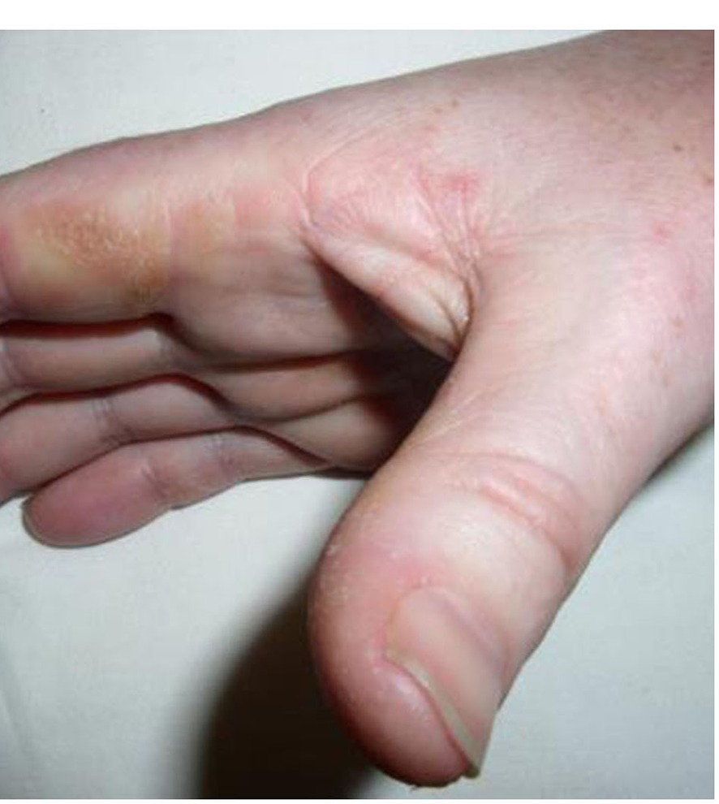

PÁGINA 2 · ERRO COMUM DE PROVA
Parece dermatomiosite. O alvo mudou.
Muitos correm atrás de neoplasia quando o quadro é “igual dermatomiosite”. Com anti-Jo-1 positivo, esse reflexo erra o alvo do tórax: o que mata é o pulmão — DPI/TC, não rastreio oncológico.
Esquema interativo dual de tórax: neoplasia versus DPI conforme o anti-Jo-1.
Como ler a virada de alvo
O painel esquerdo foca em neoplasia (DM clássica, Jo-1 negativo); o painel direito foca em DPI (Jo-1 positivo). O marcador central é o anti-Jo-1 — clicar nele alterna o tórax inteiro e dispara o tooltip-âncora do mecanismo Jo-1.

Wells M, Alawi S, Thin KYM, Gunawardena H, Brown AR, Edey A, Pauling JD, Barratt SL, Adamali HI · Front Med (Lausanne) 2022 · CC BY 4.0 · DOI 10.3389/fmed.2022.959653 · Fig. 3B
Onde olhar nesta foto
A pista clínica está na borda lateral/radial do indicador: hiperceratose, descamação e fissuras. Esse é o sinal cutâneo de prova, não heliótropo periocular, não Gottron isolado. Em prova, “mãos de mecânico” escrito no enunciado é Jo-1 até prova em contrário.
O que é a antissintetase neste recorte
A síndrome antissintetase ganhou peso em prova na faixa de doenças musculares / dermatomiosite. Fica em aberto se é entidade única ou espectro clínico dentro da dermatomiosite — para a prova, o que importa é o pacote clínico + marcador + associação.
Pode ser “tudo igual” à DM
Fraqueza e lesões dermatológicas podem copiar a dermatomiosite clássica. Quem só memoriza “DM = caçar câncer” cai.
Âncora cutânea: mãos de mecânico
Destaque à mão: descamação na superfície lateral dos dedos — o padrão das mãos de mecânico. Não é o único sinal cutâneo possível da faixa, mas é o padrão de reconhecimento prioritário em prova.
A associação que muda
A antissintetase não gosta de se associar a neoplasia — contraste com a dermatomiosite, que associa. A grande associação é a doença pulmonar intersticial (DPI). Quem carrega a morbimortalidade é o pulmão, não o câncer.
A tensão de raciocínio
Quadro semelhante à DM → reflexo clássico: correr atrás de neoplasia. Se for antissintetase, esse reflexo erra o alvo.
O marcador que muda o alvo: anti-Jo-1
Anti-Jo-1 = anticorpo antissintetase. Vignette de prova: paciente igual dermatomiosite, anti-Jo-1 positivo. A preocupação não é neoplasia: é fazer TC de tórax para avaliar o pulmão. O que mata esse paciente é a DPI.
Tabela trap: DM clássica × Antissintetase (Jo-1)
| Eixo | Dermatomiosite clássica | Antissintetase (Jo-1) |
|---|---|---|
| Clínica | Fraqueza + pele | Pode ser “tudo igual” |
| Mãos | Outros padrões cutâneos | Descamação lateral dos dedos (mãos de mecânico) |
| Associação temida | Neoplasia | DPI |
| Conduta de tórax | Caça câncer / paraneoplasia conforme contexto | TC tórax → pulmão |
Quiz
Q1. Paciente com fraqueza e lesões cutâneas “de dermatomiosite”, anti-Jo-1 positivo. Conduta de tórax prioritária no raciocínio desta vignette:
Gabarito: B. Jo-1 = antissintetase → associação e morbimortalidade = DPI; o exame que aponta o alvo é a TC de tórax.
(A) aplica o reflexo de DM clássica (neoplasia) no marcador errado. (C) inverte a associação. (D) pula a imagem e medicaliza demais sem base no pacote Jo-1.
Por que cair na A: “DM cutânea = caçar câncer” é regra verdadeira no contexto clássico — e vira armadilha quando entra Jo-1.
Quiz
Q2. Sobre associação e morbimortalidade na antissintetase:
Gabarito: B. Antissintetase não gosta de neoplasia; DPI é a associação grande e o que mata.
(A) descreve o raciocínio da DM clássica. (C) (D) apagam o eixo pulmonar.
Por que cair na A: confusão simétrica DM ↔ antissintetase por clínica cutânea parecida.
Quiz
Q3. “Mãos de mecânico”, no pacote anti-Jo-1, refere-se a:
Gabarito: B. Âncora cutânea de prova — lateral dos dedos, descamação.
(A) (C) (D) são achados de outros territórios; não são o padrão nomeado aqui.
Por que cair na A: misturar “mão de neuromuscular” com o sinal cutâneo de miopatia inflamatória.